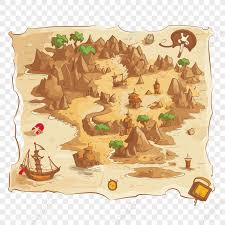

Ambon Manise Explorer
Jelajahi Warisan Sejarah Kota Ambon
Jelajahi Warisan Sejarah Kota Ambon
Mengenal lebih dekat pahlawan dan tokoh berpengaruh dari Maluku.
Proyek Ambon Manise Explorer dikembangkan dengan semangat kolaborasi.